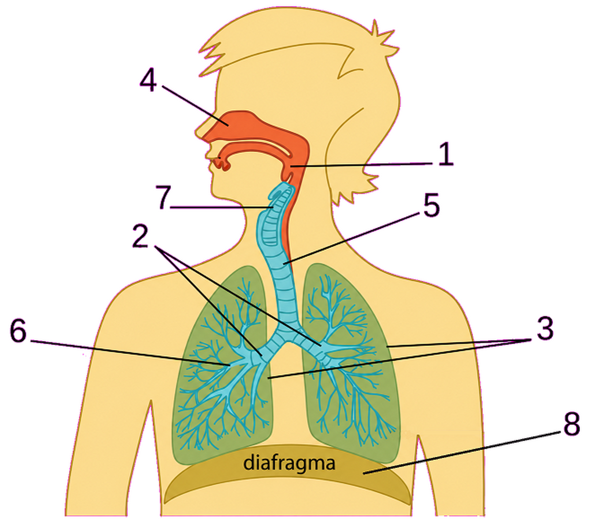

Conheça o caminho do ar.
Junte-se ao explorador Leo para descobrir como o oxigênio viaja pelo corpo. Responda, monte a rota e respire conhecimento!

Junte-se ao explorador Leo para descobrir como o oxigênio viaja pelo corpo. Responda, monte a rota e respire conhecimento!
